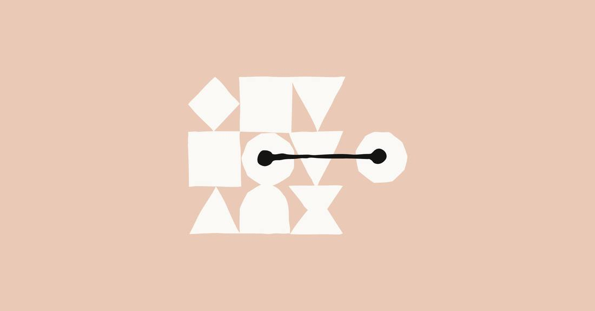
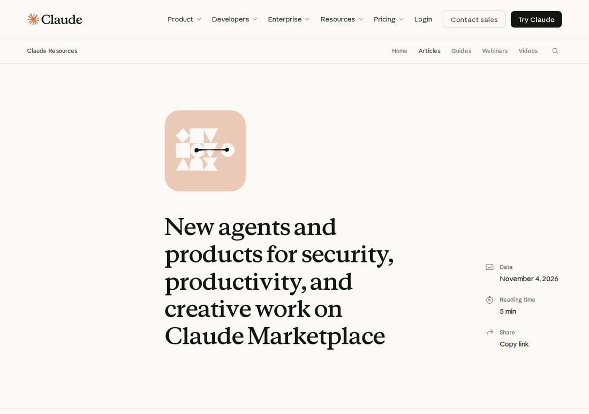

Anthropic Expands Claude Marketplace to 25+ Partner Agents, Payable From Committed Claude Spend
Anthropic expanded Claude Marketplace on November 4, 2026 with 14 new partner agents and products, taking the catalog past 25 listings. Eligible enterprise customers can apply part of their committed Anthropic spend to partner purchases, turning an existing Claude contract into a procurement channel for security, developer, creative, and productivity tools.

- 01THE EXPANSION — Anthropic announced the Claude Marketplace expansion on November 4, 2026: 14 new listings, taking the catalog past 25 partner agents and products.
- 02THE MECHANISM — Eligible enterprise customers can apply part of their committed Anthropic spend to partner purchases, new or expansions.
- 03THE WATCHPOINT — Whether commitment-based purchasing moves out of limited preview and how much of the catalog it covers for ordinary enterprise accounts.
WHAT HAPPENEDWhat Happened
Anthropic announced on November 4, 2026 that it has expanded Claude Marketplace with new agents and products for security, developer infrastructure, creative work, and productivity. The marketplace now holds more than 25 partner agents and products, with 14 new listings in this batch.
The commercial hook is procurement, not just discovery. Eligible enterprise customers can apply a portion of their committed Anthropic spend toward these partner solutions, using one commitment across Claude and partner software, whether buying something new or expanding with a platform they already use.
Security takes the largest share of the new batch. Chainguard Harness builds applications from source inside an isolated microVM and probes the live app for exploitable vulnerabilities; Checkmarx One pairs rules-based analysis with AI reasoning to find code vulnerabilities before shipping; Cyera Agent Guardian inventories Claude deployments and governs permissions before Claude runs; Rubrik Code Guardian reviews secure copies of GitHub or Azure DevOps repositories for multi-step attack paths; and Tanium Cloud gives real-time visibility and control across endpoints.
The remaining additions cover the rest of the enterprise stack. Datadog Agent Observability traces agent execution through tools and services, and Netlify Enterprise deploys apps, sites, and agents to a global edge network. AirOps covers AI search strategy, Runway generates and edits video, images, and audio, and Webflow builds and manages websites. Asana AI Teammates, Glean, monday agents, and Zoom Agentic Search cover project work, enterprise knowledge, project management, and meeting-grounded search inside Claude.
WHY IT MATTERSAnthropic is selling distribution, not just a model
A marketplace that accepts committed spend turns an existing enterprise contract into a distribution channel. A buyer that has already approved an Anthropic budget can now route part of it to security, observability, and productivity vendors without a separate procurement round, which lowers the friction for every partner on the list.
That is also why the limited-preview caveat matters. Until eligibility and qualifying transactions are broad, the catalog's size overstates what most buyers can actually purchase this way. The test is whether the commitment mechanism expands beyond a preview or stays a perk for the largest accounts.
WHY IT MATTERSSecurity dominates because agents are the new attack surface
Five of the 14 new listings are security products, and two more (Datadog observability, Cyera governance) exist to watch what agents do. That weighting tracks the enterprise objection to agents: not whether they can do the work, but whether anyone can see, govern, and audit it.
Anthropic is effectively bundling the answer to that objection into its own storefront. If buyers accept the marketplace as the governed place to buy agent tooling, Anthropic gains leverage over which vendors reach its enterprise customers.
SIGNAL JUDGMENT — ANALYSISThe marketplace is Anthropic's enterprise moat play
Tokenta Signal's judgment: the headline is not the 14 listings, it is the payment rail. Letting committed Claude spend flow to partner products makes Anthropic the toll road for agent tooling inside its largest accounts, and the security-heavy mix shows the company knows governance, not capability, is the sale. The watchpoint is whether commitment purchasing leaves limited preview and becomes a standard enterprise term.
WHAT REMAINS UNCERTAINWhat Remains Uncertain
EVIDENCEEvidence

Anthropic's November 4, 2026 Claude Marketplace announcement was opened and verified directly: new agents and products for security, developer infrastructure, creative work, and productivity; more than 25 partner agents and products in total; eligible enterprise customers can apply a portion of their committed Anthropic spend toward these solutions. Unite.AI's same-day coverage agrees on the expansion, the partner list, and the commitment purchasing option.
PRIMARY SOURCESPrimary Sources
- Anthropic: New agents and products on Claude Marketplace
https://claude.com/resources/articles/new-agents-and-products-claude-marketplace - Unite.AI: Anthropic Expands Claude Marketplace with Partner Agents and Products
https://www.unite.ai/anthropic-expands-claude-marketplace-with-partner-agents-and-products/
RELATEDRelated Intelligence
- Microsoft 365 Outage Passes 20 Hours as 12:58 UTC Update Reports Broader Recovery in North America
- Microsoft 365 Outage Passes 19 Hours as 12:00 UTC Update Reports Encouraging Recovery Progress in Europe
- Microsoft 365 Outage Passes 18 Hours as 11:01 UTC Update Reports Recovery Completed in Parts of Asia Pacific
- Microsoft 365 Outage Passes 17 Hours as 09:57 UTC Update Reports Incremental Improvement but Capacity Still Below Baseline